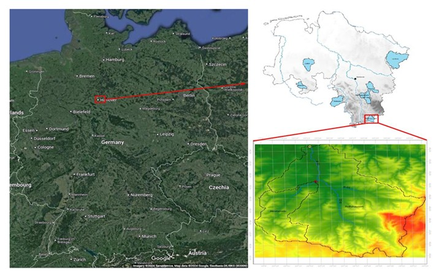
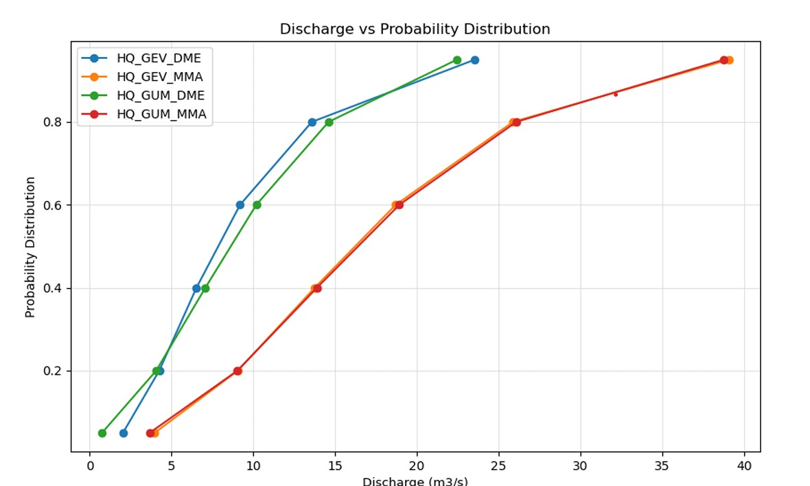
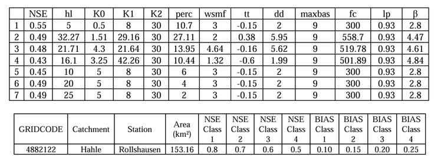

Hydrological Modelling — Hahle Catchment
Semi-Distributed HBV-IWW Rainfall-Runoff Modelling, Flood Frequency Analysis & Sensitivity Calibration
| Institution | Institut für Hydrologie und Wasserwirtschaft, Leibniz Universität Hannover |
| Course | Hydrological Extremes — Project Assignment |
| Year | 2024 |
| Supervisor | M.Sc. Adina Brandt |
| Study Area | Hahle Catchment, Lower Saxony / Thuringia border, Germany |
| Tools | ArcGIS Pro, HBV-IWW Model, Python, Excel |
| Data Period | 1950–2013 (climate); 1961–2012 (discharge) |
Overview
This project implements the complete hydrological modelling workflow for the Hahle catchment — a small-to-medium river basin on the Lower Saxony/Thuringia border in central Germany. Using ArcGIS Pro for catchment delineation and the semi-distributed HBV-IWW conceptual model for simulation, the study covers four interconnected tasks: catchment characterisation and GIS mapping, time series quality control, flood frequency analysis, and rainfall-runoff model calibration.
The catchment was divided into two sub-catchments — Westerode (W01, 33.16 km², upstream) and Rollshausen (W02, 153.16 km², downstream) — with land use dominated by agriculture (60–83%) and a mean slope of ~5%, indicating a rain-dominated, infiltration-sensitive hydrology with minimal snowmelt influence.

Methodology
Catchment delineation was performed in ArcGIS Pro using DEM100 — filling sinks, computing flow direction and accumulation, and snapping pour points to gauging stations. Time series quality control applied plausibility checks, consistency mapping, and Double Sum Analysis (DSA) to confirm a stable stationary precipitation-runoff relationship throughout the 52-year record.
Flood frequency analysis fitted GEV and Gumbel probability distributions using L-moments to both daily mean runoff (DME) and monthly instantaneous peak (MMA) datasets. All four fits passed the nω² goodness-of-fit test at α = 0.05. The HBV-IWW model was configured with five routines — snow, soil moisture, response, transformation, and Muskingum river routing.
| Return Period | HQ DME — GEV (m³/s) | HQ MMA — GEV (m³/s) | HQ DME — Gumbel (m³/s) | HQ MMA — Gumbel (m³/s) |
|---|---|---|---|---|
| 10 years | 18.3 | 32.5 | 18.6 | 32.5 |
| 50 years | 31.6 | 47.7 | 27.4 | 46.8 |

Key Findings
- MMA consistently produces higher design flood estimates — at 50-year return period, GEV/MMA gives 47.7 m³/s vs GEV/DME at 31.6 m³/s.
- Response routine parameters (hl, K0, Kperc) are the most influential — controlling the split between direct runoff, interflow, and percolation.
- Soil parameters (fc, lp) are particularly influential in summer when evapotranspiration dominates.
- Snow routine parameters had negligible influence — confirming rain-dominated hydrology.
- Manual calibration achieved NSE = 0.55 (Class 4 — marginally acceptable). Automated optimisation required for Class 1–2 performance.

Conclusion
This project demonstrated comprehensive applied competency in GIS-based catchment analysis, statistical flood frequency methods, and conceptual hydrological modelling. The MMA dataset and GEV distribution are recommended for risk-averse flood infrastructure design.
The HBV-IWW model captures general runoff dynamics but requires automated calibration for higher NSE performance — a clear pathway for future work in flood risk management for similar mid-sized German catchments.